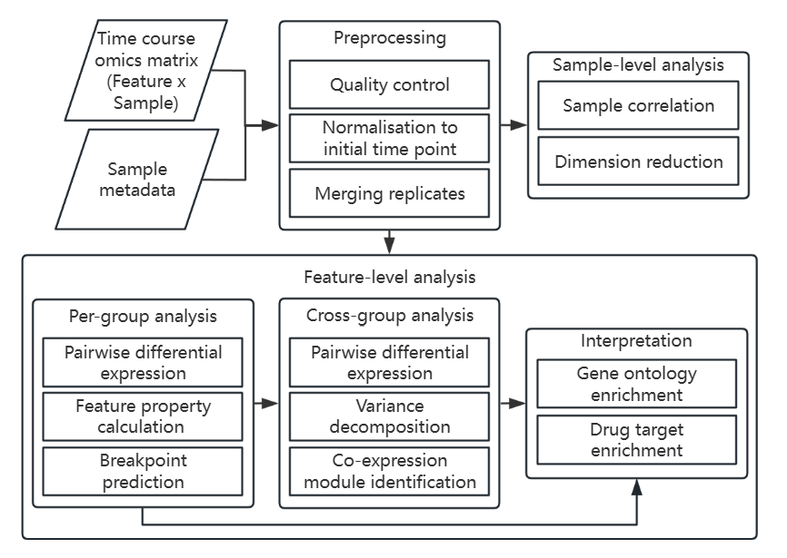

TiDEomics provides an integrated framework for Time-course Differential Expression analysis of omics data with multiple experimental groups / conditions.
TiDEomics enables:
- Analysis of feature x sample format data from different omics technologies.
- Comparison of multiple (more than two) time courses systematically.
- Filtering of features by residual variance, accounting for group and temporal structure.
- Identification of features (e.g. genes, proteins) and pathways differentially expressed by time, group, and both factors (time x group interactions).
- Integration of quality control, data processing, sample-level and feature-level analysis, tailored for time-course multi-condition data.
- Functional enrichment with high-quality visualisation.
Existing time-course analysis tools typically focus on a single analysis step or are limited to two-group designs or transcriptomics input, and do not provide an integrated workflow.

Example applications include:
- Transcriptomics analysis of a cell type’s response to different stimuli over time.
- Proteomics analysis of wild type and multiple mutant cell lines sampled at several time points.
TiDEomics supports datasets with missing values (e.g. mass spectrometry-based proteomics), and operates on SummarizedExperiment objects to ensure compatibility with the Bioconductor ecosystem.
TiDEomics supports both independent-sample designs (e.g. cell culture) and repeated-measures designs (e.g. patient longitudinal studies, via subject_col in create_input()). Downstream functions auto-detect the data structure.
Installation
Get the latest stable R release from CRAN. Then install TiDEomics from Bioconductor using the following code:
if (!requireNamespace("BiocManager", quietly = TRUE)) {
install.packages("BiocManager")
}
BiocManager::install("TiDEomics")The development version can be installed from GitHub with:
if (!require("remotes", quietly = TRUE)) install.packages("remotes")
remotes::install_github("hte123/TiDEomics")Example
For detailed examples and explanations, please refer to the tutorial, applications and other package documentation.
Citation
Below is the citation output from using citation('TiDEomics') in R. Please run this yourself to check for any updates on how to cite TiDEomics.
print(citation("TiDEomics"), bibtex = TRUE)
#> To cite package 'TiDEomics' in publications use:
#>
#> He T (2026). _TiDEomics: Time-course Differential Expression analysis
#> of omics data_. R package version 0.99.2,
#> <https://github.com/hte123/TiDEomics>.
#>
#> A BibTeX entry for LaTeX users is
#>
#> @Manual{,
#> title = {TiDEomics: Time-course Differential Expression analysis of omics data},
#> author = {Tianen He},
#> year = {2026},
#> note = {R package version 0.99.2},
#> url = {https://github.com/hte123/TiDEomics},
#> }Please note that the TiDEomics was only made possible thanks to many other R and bioinformatics software authors, which are cited either in the vignettes and/or the paper(s) describing this package.
Code of Conduct
Please note that the TiDEomics project is released with a Contributor Code of Conduct. By contributing to this project, you agree to abide by its terms.
Development tools
- Continuous code testing is possible thanks to GitHub actions through usethis, remotes, and rcmdcheck customized to use Bioconductor’s docker containers and BiocCheck.
- Code coverage assessment is possible thanks to codecov and covr.
- The documentation website is automatically updated thanks to pkgdown.
- The code is styled automatically thanks to styler.
- The documentation is formatted thanks to devtools and roxygen2.
This package was developed using biocthis.